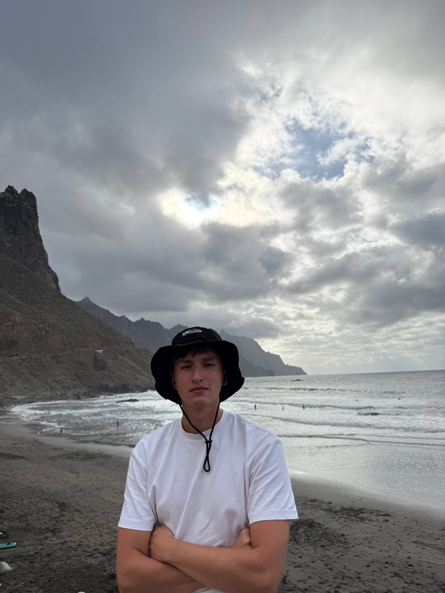

Maksym Makedonskyi
Aspiring Frontend Developer

Contact
- Czechia
- maxim.makedonskiy@gmail.com
- +420 607 799 617
Summary
Software Engineering student at the University of Hradec Králové with a strong passion for web development, actively working towards a career as a Frontend Developer. Currently developing analytical and communication skills as a part-time Mathematics Tutor. Highly motivated, adaptable, and eager to apply my academic foundation in computer science to real-world frontend challenges in a junior or internship role.
Education
University of Hradec Králové (UHK)
Software Engineering | Present
- Building a solid foundation in computer science, software architecture, and programming principles.
Experience
Mathematics Tutor
Part-time | Present
- Provide individualized mathematics tutoring, breaking down complex logical and mathematical concepts into easily understandable steps.
- Develop strong communication, patience, and problem-solving skills, which are highly applicable to debugging code and collaborating within a tech team.
Skills
- Core Technologies: HTML, CSS, JavaScript
- Soft Skills: Problem-solving, analytical thinking, mentoring, adaptability, time management.
Languages
- Ukrainian: Native
- Russian: Native
- Czech: Upper-Intermediate (B2)
- English: Intermediate (B1)